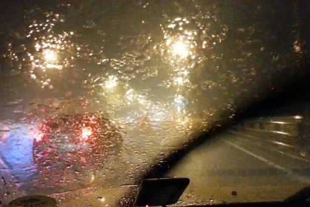
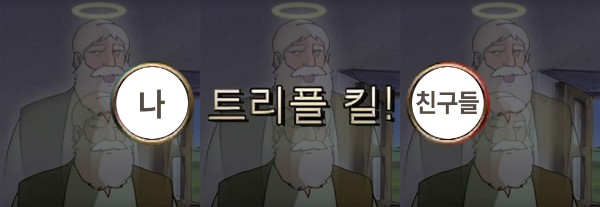
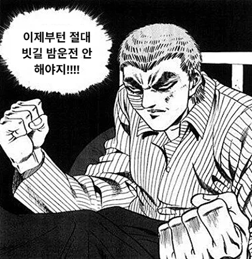
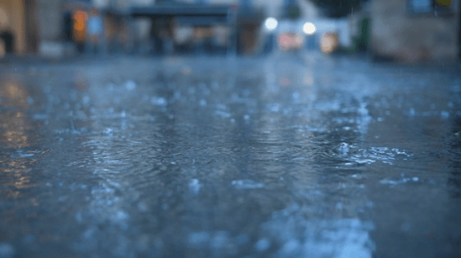

세상에는 직접 겪어보지 않으면 절대 모르는, 아니 굳이 겪어보고 싶지 않은 일들이 있다.
나에게는 ‘폭우가 쏟아지는 밤의 운전대’가 딱 그랬다.
작년 어느 새벽이었다. 하늘에 구멍이라도 뚫린 것처럼 폭우가 미친 듯이 쏟아지던 날,
나는 빗속을 뚫고 운전을 해야만 했다.
그리고 그 날, 나는 태어나서 한 번도 타본 적 없는 후룸라이드의 아찔함을 도로 위에서 생생하게 간접 체험했다.

▲ 1인칭 시야 간접 체험
심지어 그 길은 친구들을 집에 태워다주느라 처음 가보는 초행길이었다.
와이퍼를 아무리 바쁘게 돌려도
앞은 끊임없이 쏟아지는 빗방울과 물안개에 번져 흐리기만 했고,
생명선과도 같은 차선은 야속하게도 빗물에 싹 지워져 보이지 않았다.
정말이지, '아, 이대로 끝인가?' 싶어 등에 식은땀이 흐른 순간이 한두 번이 아니었다.

‘지금 사고내면 트리플킬로 지옥행 확정이다’
라고 생각하며 정말, 정말 많이 집중했다. 지나다니는 차가 없는 새벽이었기에 망정이지,
만약 낮이었다면 십중팔구 대형 사고로 이어졌을 것이다.
그렇게 집 주차장에 도착하고 덜덜 떨리는 손으로 겨우 운전대를 놓고 난 뒤
나는 굳게 다짐했다.
'내 인생에 두 번 다시 빗길 밤 운전은 없다'고.

…
..
.
하지만 인간의 욕심은 끝이 없고 같은 실수를 반복한다고 했던가.
굳건했던 내 다짐은 불과 저번 주에 처참히 깨지고 말았다.
(분명 낮까지만 해도 비의 기운이라곤 전혀 없는 맑은 하늘이었다. 정말이다!)
당연히 비가 오지 않을 줄 알고 안심한 채 차를 몰고 등교했는데,
하필 저녁부터 야속하게 빗방울이 후두둑 떨어지기 시작했다.

지난 경험이 떠올라 너무 무서웠지만 집은 가야했기에 열심히 액셀을 밟았다.
하지만 진짜 위험은 차선이 보이지 않는 도로가 아니었다.
바로 '식곤증' 이었다.
이틀간의 1-9교시 연강이 끝나고 잔뜩 지친 몸,
퇴근길이라 꽉꽉 막히는 도로,
거기에 든든하게 채워 넣은 저녁밥,
어두컴컴한 빗길이라는 4단 콤보는 자꾸만 내 의식을 멀어지게 했다.
▲ 당시 나의 모습 예상도
생존을 위해 고개를 마구 흔들고, 잠을 쫓아보겠다고
목청껏 노래도 불러보고, 심지어 내 손으로 내 뺨
을 찰싹찰싹 때려가며 셀프 고문까지 감행했
다. 하지만 파도처럼 밀려오는 졸음에
결국 최후의 수단을 꺼내 들 수
밖에 없었다. 그것이
무엇이냐 하
면···
톡...
토독...
뚜르르르...
달칵,
" 여보세요? 무슨 일이야? "
냅다 친구에게 전화를 걸었다.
나는 누군가와 떠들면 아드레날린이 돌면서 정신이 드는 타입이었고,
빗소리를 배경 음악 삼아 졸음을 쫓기 위한 왁자지껄한 대화가 차 안을 채웠다.
다행히도 내 소중한 친구는 시간이 있었고,
나를 위해 설거지를 하던 도중 이어폰까지 꽂아가며 계속 대화해주었다.
그렇게 친구와의 통화 덕분에 나는 무사히 본가 주차장에 도착할 수 있었고,
시동을 끄고 나서야 비로소 참았던 숨이 크게 쉬어졌다.
(등이 식은땀으로 축축해져있었다…)
이 글을 읽는 모든 분들께 내 영혼을 담아 전하고 싶다.
당신이 운전 고수가 아니라면 비 오는 날 밤에는 웬만하면 운전대를 잡지 마시라.
그리고 만약 어쩔 수 없이 잡아야만 한다면
밥은 적당히 먹고, 전화를 받아줄 든든한 친구 한 명쯤은 꼭 대기시켜 두시기를…